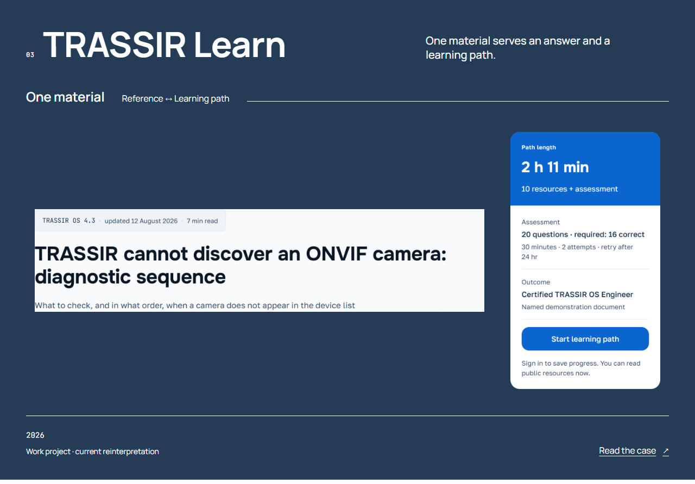
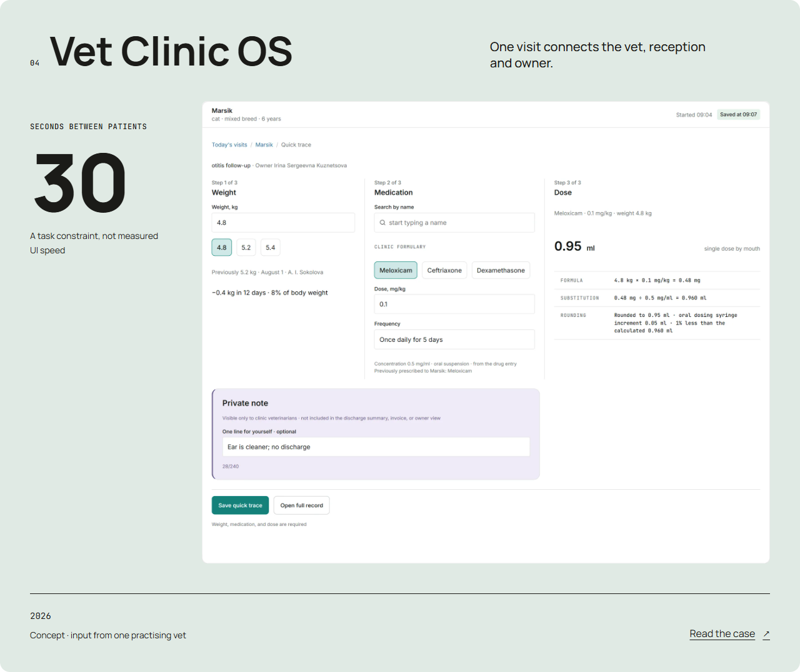
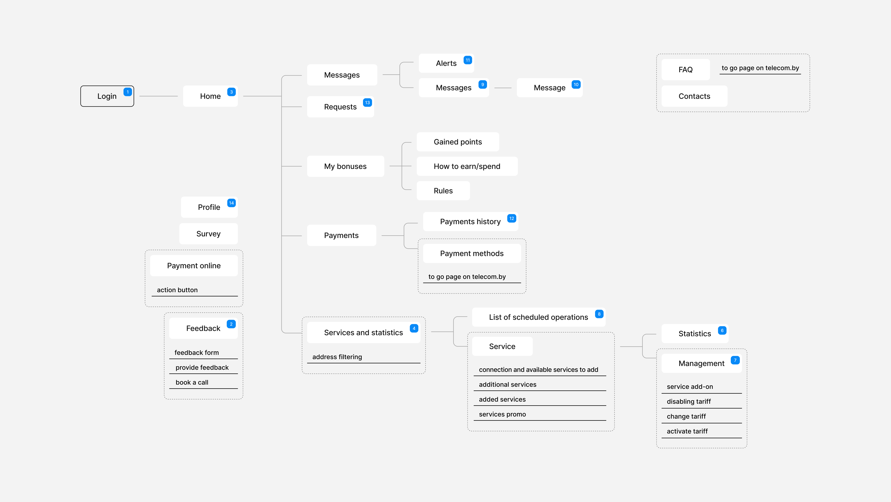
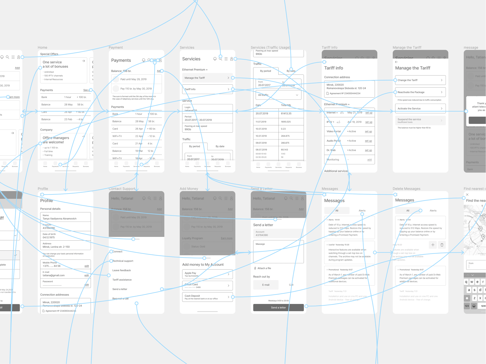
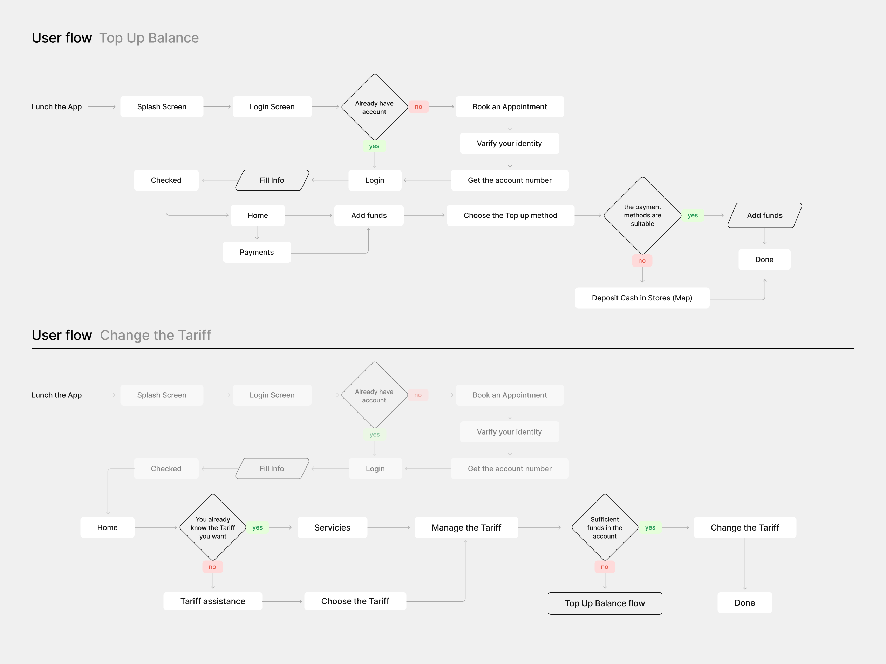
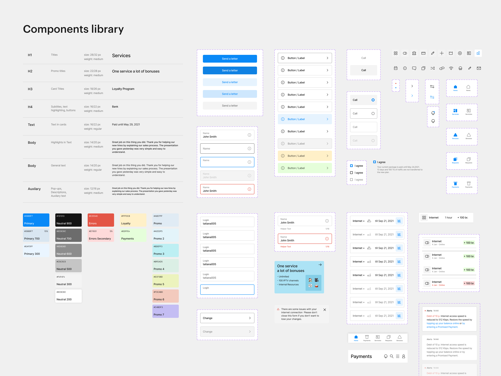
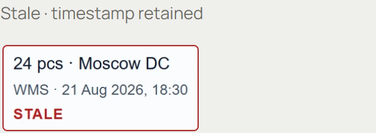

Source: 765803e9d2e56e663885d083237ea29ac53a11b9. Все opening кадры завершившиеся, в reduced-motion; native video включает вступление. Полная страница Learn показывает раскрытый второй маршрут для проверки. H1 сохранён отдельно; независимая приёмка H2 ожидается.
| Before | After | Why |
|---|
| RU mobile: четыре входа, продукт ниже окна | Пять входов и $340 native approval в первом окне | Предметное первое впечатление |
| Learn: полоса заголовка и одинокий паспорт | Диагностический материал, текущий ресурс 03, паспорт | Один заголовок и реальные связанные контексты |
| Vet повторяет Portal 38/30 | След врача сверху; счёт и публикация снизу | Роли, устройства и состояния формируют другую сцену |
Главная
Все пять входов и настоящий UI до биографии
Before · H1 / df1da7e · changes requested After · H2 / 765803e
After · H2 / 765803e
Новая запись · EN desktop / RU mobile
Learn
Материал и текущий ресурс с одним заголовком
Before · H1 / df1da7e · changes requested After · H2 / 765803e
After · H2 / 765803e
Новая запись · EN desktop / RU mobile
Vet
След → счёт → опубликованный план
Before · H1 / df1da7e · changes requested After · H2 / 765803e
After · H2 / 765803e
Новая запись · EN desktop / RU mobile
Цельный Learn
H1 · вся композиция
H2 · вся композиция
Отдельная композиция Vet
H1 · вся композиция
H2 · вся композиция
Конкретные референсы
Dounar Black Forest: просмотрены Products overview и структура Audit → Direction. Общая большая плоскость UI и связанные контексты послужили основанием Learn. Black Forest отдельно от homepage/TopNote. Сохранённые HA originals ниже показывают структуру связей и разных устройств; чужих пикселей в public нет. Архивные motion sheets H1 остаются в отдельной галерее.
HA-MAP-01 · связь материала и контекстов
H2 · одна статья / два контекста HA-PROTO-01 · разные устройства и состояния
HA-PROTO-01 · разные устройства и состояния
H2 · три представления одного визита HA-FLOW-01 · видимая структура переходов
HA-FLOW-01 · видимая структура переходов
HA-DS-01 · native компоненты
Край красной обводки
Свежий production capture. Родная красная рамка без белого внешнего canvas. Alpha/радиус самого источника сохранены; CaseScreen native без собственной маски.

Сохранённые сильные истории
Agent interlock/checkpoint, Portal и Pawly unchanged. Их шесть H1 записей сохраняются побайтово; проверены соседние маршруты текущего source.
agent-ops-console · сохранённая H1 запись неизменённой истории
partner-portal · сохранённая H1 запись неизменённой истории
pawly · сохранённая H1 запись неизменённой истории